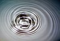

wave

Definition: In physics, mathematics, and related fields, a wave is a propagating dynamic disturbance (change from equilibrium) of one or more quantities. Waves can be periodic, in which case those quantities oscillate repeatedly about an equilibrium (resting) value at some frequency. When the entire waveform moves in one direction, it is said to be a traveling wave; by contrast, a pair of superimposed periodic waves traveling in opposite directions makes a standing wave. In a standing wave, the amplitude of vibration has nulls at some positions where the wave amplitude appears smaller or even zero. Waves are often described by a wave equation (standing wave field of two opposite waves) or a one-way wave equation for single wave propagation in a defined direction.
Source: Wikipedia
Wikipedia Page (Something wrong with this association? Let us know.)
Wikidata Page (Something wrong with this association? Let us know.)